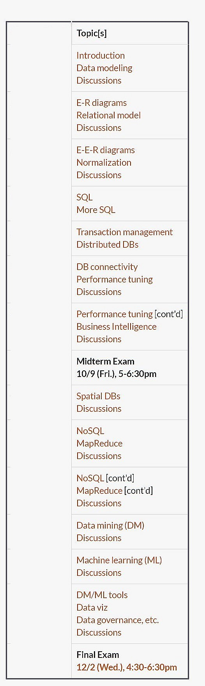

<!-- ************************* -->
#### &nbsp;
## **CSCI 585: Database Systems**
##Spring 2021
<div style="height:1px;border:1px solid #BBBBBB;"/>
###Overview
#### This course covers the essential concepts, principles, techniques, and mechanisms for the design, analysis, use, and implementation of computerized database systems. Key information management concepts and techniques are examined: information modeling and representation; information interfaces - access, query, and manipulation, implementation structures, and issues of distribution.
####The database and information management system technology examined in this course represents the state-of-the-art, including traditional approaches as well as recent research developments. By providing a balanced view of "theory" and "practice," the course should allow the student to understand, evaluate, and utilize practical database and information management systems.
####The course is intended to provide a basic understanding of the issues and problems involved in database systems, knowledge of currently practical techniques for satisfying the needs of such a system, and an indication of the current research approaches that are likely to provide a basis for tomorrow's solutions.
####In addition to classic relational databases, we will also cover these topics pertinent to modern practice: spatial data, Big Data, NoSQL, and the basics of data mining as well as supervised machine learning.
####In addition to regular lecture and discussions, you will also be provided, ongoing, with 'extra' material that would help bridge what you learn in the course, with real life data handling practices and case studies, etc.
####In a single word, this course is about - **data** :)
###Pre-requisites
#### As stated in the university catalog, a passing grade in CSCI485 or departmental permission is required to register for this class. Knowledge of relational databases, SQL, relational algebra and physical database design is desired [but not essential].
####Note that this course involves several programming assignments/projects, for which some programming ability would be required. Assignments might call for the use of HTML, JavaScript, [the basics of] R, Python, etc.
###Topics
####Here are topics from fall 2020 - for spring, we will cover the same ones (but with updated content for fast-moving topics).
<br>
#### Our textbook (for the pre-midterm part of the course) is <b>'Database Systems', by Coronel/Morris</b>, ISBN:9781285196145 (textbook version, no online access) - this is the 11th edition, but the 12th edition would work just as well.
####There is no textbook for the second part of the course - reason - the subject matter is relatively new, and, is in constant flux.
####As we progress through the course, there might be additional content (PDFs, links to sites, etc) that will be made available for you.
###Course structure
####This term, the course will be entirely online/remote. Lectures will be streamed via WebEx, be recorded, and posted on DEN/D2L. You'll submit HWs via D2L. Exams will be online, too. We will make heavy use of Piazza, to communicate with each other throughout.
####The course will have **five** assignments. Assignments are to be completed individually [no collaboration allowed!]. There will be **two** exams: a midterm exam and a final.
####The following weightage scheme will be used in determining letter grades for the course at the end of the term:
####&bull; assignments: 30% (5*6%)
####&bull; exams: midterm: 35%, final: 35%
<div style="height:1px;border:1px solid #BBBBBB;"/>
###Questions?
####Do feel free to ask: saty@usc.edu.
<div style="height:1px;border:1px solid #BBBBBB;"/>
<div style="height:1px;border:1px solid #BBBBBB;"/>
<!-- ********************************** -->